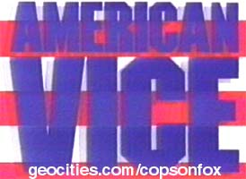

If anyone has a tape of this show you can send please contact
me about a trade.
This one time special was produced by John Langley and became his calling card
to sell Cops to Fox.
Articles | Pictures
Live on the Vice Beat
By Richard Zoglin Time 12/22/86
A squad of sheriff's deputies storm a duplex suspected of being a base for drug
dealers, batter in the front door and burst inside. The place is empty, except
for a bewildered woman in cutoff shorts. "Put it on the wall, lady,"
shouts an officer, pushing her against the paneling and placing her under
arrest. But she is released two days later when the police cannot provide
evidence linking her with a quarter-gram of cocaine found in the apartment.
That fizzled bust was not unusual except for one feature: it was seen on
national TV. The raid, in the Houston suburb of Channelview, was one of three
drug busts telecast live to 141 stations on a two-hour syndicated special,
American Vice: The Doping of a Nation. The program, with Geraldo Rivera as host
and producer, has drawn fire from journalists and police officials alike for its
sensational reporting tactics.
The flap marks the second embarrassment this year for Rivera, the gonzo
journalist who departed from ABC News last year. In April Rivera was host of
another special, The Mystery of Al Capone's Vaults, in which the gangster's
secret cache was opened on live TV, only to reveal a few dusty bottles. (The
show, nevertheless, was the most watched syndicated special in history.) The
Doping of a Nation (which also drew high ratings, ranking No. 4 on the all- time
list) was another example of Rivera's jugular journalism. Taped segments
included scenes of undercover police nabbing coke buyers; addicts shooting up
and corpses being pulled from the water; and even Rivera himself, disguised in
sunglasses and a red bandanna, posing as a drug buyer.
Most dramatic were the live dope raids, monitored by Rivera from a New York
studio. All were real police operations, conducted under legal search warrants
and coordinated so that they could be shown during the telecast (8 pm EST).
But one man arrested in a raid on a house in San Jose was released two hours
afterward, when he turned out to be living there temporarily. (The renter of the
apartment was arrested later, off camera.) The Texas raid got a big buildup from
Rivera (the authorities, he said, were after "a pimp and his prostitutes...this
dude and his ladies" who were allegedly dealing dope to truckers).
But the woman arrested, Terry Rouse, claimed she had been living at the duplex
for only a week, and charges were dismissed by Texas District Judge Donald
Shipley. She is planning to file suit against the police and possibly Rivera and
his production company as well.
Rivera points out that the raids were legitimate police operations that would
have taken place even without the cameras. "We were covering the law
enforcement (officers) doing their job," he says. "It was their event,
not ours." Complaints against the show, Rivera contends, come from
journalists who dislike his aggressive and emotional reporting style. "I'm
not afraid to get down and dirty," he says. "I'm not afraid to be
passionate."
The Miami Vice antics of Rivera's show highlighted concerns about the
increasingly common practice of letting TV crews tag along on drug raids. A
search warrant, says Judge Shipley, does not give police "permission to put
the whole nation into somebody's house with TV cameras." Some police
officials object that the cameras, lights and onlookers can jeopardize safety.
Nor is TV merely an eavesdropper. During one raid on Rivera's show, an officer
could plainly be heard to make a telling, and disturbing, inquiry: "We are
still live?"
Archived 2001-09 by Alex Thrawn for Cops on Fox